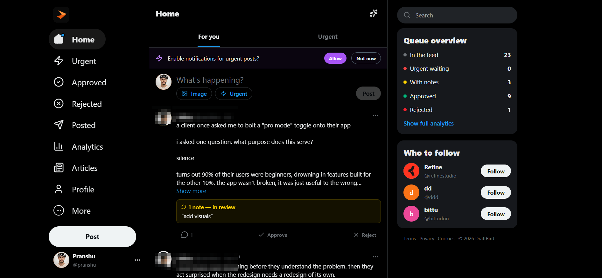

KPI Tracker
Outreach and BD analytics: reply rates, sentiment, funnel health, follow-up cadence. 3 views.
Things I've built from scratch, systems I've run, and the track that brought me here.
The tracks I have taken
Working inside ecosystems taught me how people actually behave inside products: what makes them join, stay, trust, and bring others in. No deck teaches that.
At Refine Studio, I worked as a UX Strategist embedded in client products. My job was to find the invisible friction that slows growth before anyone names it.
I transitioned into a Growth Operator role at Refine Studio, working directly with founders to build systems and move faster. Analysis gave me the problems. Operations gave me the tools to fix them.
At Yap Market, I worked across partnerships, GTM, campaigns, and ecosystem growth, sitting between the strategy and the teams executing it.
The through-line across every role has been the same: find the problem, understand the user, build the fix, measure what moved. That is product thinking. I have been doing it without the title.
Things I have built
When a team, a flow, or a product has a problem, I tend to build the fix. Tap any project to see the problem, what I built, and the impact.
Outreach and BD analytics: reply rates, sentiment, funnel health, follow-up cadence. 3 views.

A content approval app to draft, review, approve, schedule, and track, all in one place.

An AI lead qualifier that scans protocols and scores leads hot, warm, or cold with a review queue.